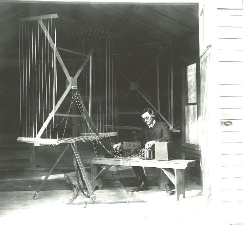
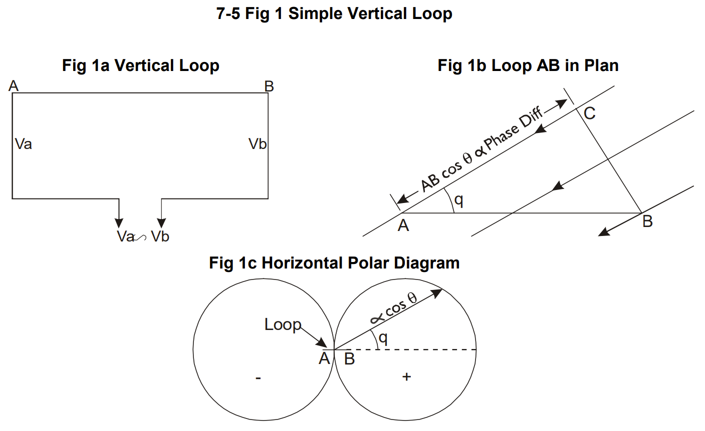
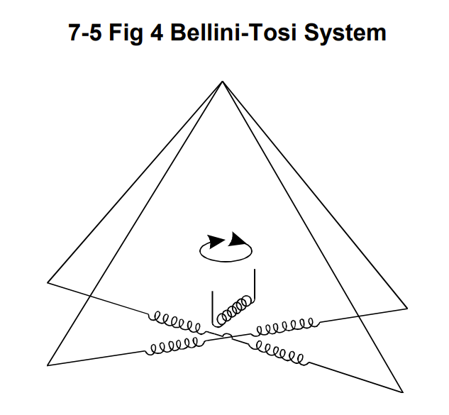
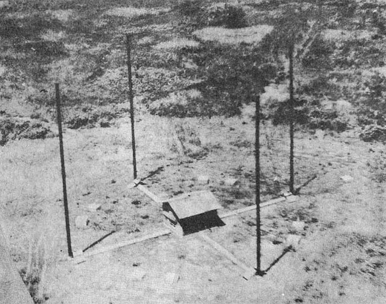
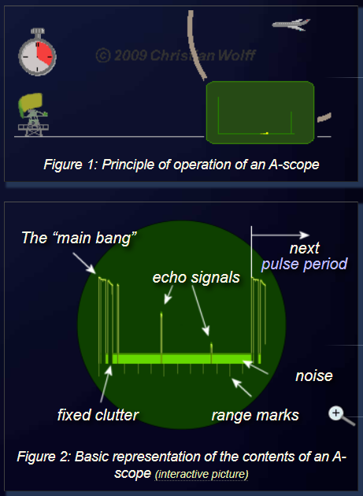
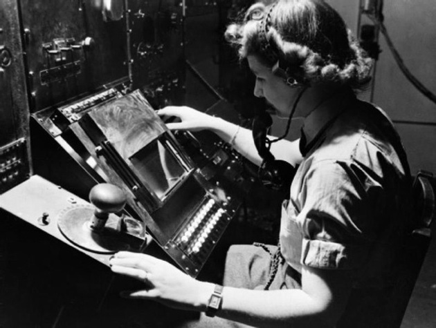
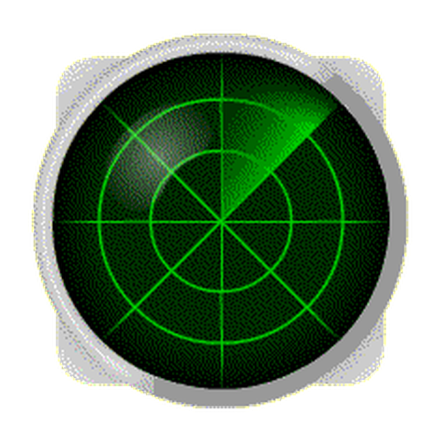

레이더 개발 이야기 (2) - 어려움과 극복
게시: 2022-09-22T06:30:35+09:00
<왜 초기 레이더는 거대했나> 솔까말 난 잘 이해가 안 가는데 아무튼 Wilkins는 강렬한 반사파를 얻기 위해서는 폭격기 날개폭에 맞춰 약 25m 장파를 사용해야 한다고 주장. 실제로는 꼭 그렇지는 않았으나, 파장이 cm 단위인 단파를 얻기 위해서는 고주파를 생성해야 했지만 어차피 당시 전자 소재 기술로는 그런 고주파 생성이 어려웠으므로 장파를 써야 했음. 문제는 수신 효율이 좋으려면 안테나의 길이는 파장 길이의 1/4이 제일 좋았다는 점. 그러니 25m 장파를 위해서는 안테나 길이가 6m가 넘었고, 대지로부터의 반사파 간섭을 피하려고 높은 곳에 여러 개를 매달아야 하다보니 엄청난 송전탑 같은 레이더 타워를 세워야 했음. 특히 수신 안테나는 금속 소재로부터의 간섭을 피하기 위해 목재로만 만들었음. 그런데 수신 안테나는 특히나 높이가 중요했음. 항공기 고도 측정을 위해서 직접반사파는 수신탑 꼭대기의 안테나에서, 대지반사파는 수신탑 아래쪽 안테나에서 받아야 했기 때문.

(윗 사진은 WW2 직전 세워진 영국공군의 Chain-Home RDF (Radio Direction Finder) station. 왼쪽의 3개 철탑이 송신 안테나 타워, 오른쪽의 4개 목탑이 수신 안테나 타워. 저 수신 안테나의 높이는 대략 73m인데, 이렇게 거대한 구조물을 아무 설명없이 세울 수는 없었음. 그러나 당시 레이더라는 물건은 영국의 1급 기밀. 그래서 당시에 쓰던 코드 네임이 RDF (Radio Direction Finder). 전파 방향 탐지 기술은 당시 이미 전세계가 쓰던 기술이었으므로 딱 좋은 위장 명칭이었음. Radar라는 이름은 나중에 미해군에서 Radio Detection And Ranging을 줄여서 radar라고 부르게 된 것.)
전에 언급했듯이 전파 발신원의 방향이 어디인지는 헤르츠 박사가 전파의 존재를 입증한 초기부터 그 탐지 원리가 알려졌던 것. 즉, 루프 안테나의 각도에 따라 신호 강도가 달라지므로 (직각일 때 강도가 가장 높고 평행일 때 0), 안테나를 빙글빙글 돌려보면 그 방향을 잡을 수 있었음.

(윗사진이 1919년 전파 발신원 방향 탐지기. 당시로서는 굉장히 소형에 속하는 것이었다고.)
그러나 길이가 10m에 가까운 안테나를 빙빙 돌려볼 수는 없는 노릇. 그래서 나중에는 2개의 루프 안테나를 직각으로 배열해놓은 뒤 그 상대적 수신 강도를 측정한 뒤 삼각함수로 방위각을 구할 수 있었음.

(여러분, 학교 다닐 때는 평생 쓸 일이 없을 거라고 생각하셨던 삼각함수 다들 기억하시죠~?)
특히 1907년 이탈리아 엔지니어인 Ettore Bellini와 Alessandro Tosi가 그런 십자배열 안테나 밑에 작은 유도 코일을 배치함으로써 훨씬 쉽고 확실하게 전파 발신원의 방위각을 잴 수 있는 벨리니-토시 전파방위각 측정기 (Bellini–Tosi direction finder)를 발명했기 때문에, 일단 반사파를 얻을 수 있다면 그 방위각을 측정하는 것은 그렇게 어렵지는 않았음.

(벨리니-토시 전파방위각 측정기의 대략적 원리-구조)
이와 비슷한 원리로 수신 안테나도 매우 높은 곳에 하나, 낮은 곳에 하나를 두어 높은 안테나에서는 항공기로부터의 직접반사파를, (어떻게 그렇게 할 수 있는지는 전기공학과가 아니라서 잘 이해가 안가는데) 낮은 안테나에서는 직접반사파가 수신탑 앞의 대지에 부딪혀 나오는 2차 반사파를 수신하여 그 각도 차이를 측정함으로써 대략의 고도를 측정. 그러자면 두 안테나 사이의 거리가 멀 수록 좋았고, 그러다보니 더욱 안테나 타워는 거대해졌음.

(WW2 당시 라바울에 설치된 일본군의 벨리니-토시 전파방위각 측정시설. 약 2MHz 대역의 전파를 잡기 위해 만든 것. 참고로 2MHz의 주파수를 가진 전파의 파장은 대충 299,792,458m / 2백만 = 대략 150m. 299,792,48m는 1초간 빛이 가는 거리.)
<디자이너 빼고 과학자만 있으면 이런 사달이 난다> 초기 레이더의 핵심은 결국 항공기와의 거리 측정. 빛은 1초에 대략 300,000km를 달리니까, 가령 전파를 쏜지 0.01초만에 반사파가 돌아왔다면 빛이 0.005초 동안 달리는 거리, 즉 150km 밖에 항공기가 있다는 이야기. 그런데 이걸 당시 사용되던 브라운관(CRT, cathode-ray tube)에 어떻게 디스플레이하지? Wilkins를 비롯한 과학자들은 매우 똑똑한 사람이었으나 디자이너 또는 UX 전문가로서는 젬병. 그들의 빈약한 상상력으로 만든 것이 A-scope라는 것. 즉, 평상시에는 텅빈 화면 가운데를 초록색 주사선이 왼쪽에서 오른쪽으로 쓱 쓸고 감. 그러니까 화면에는 초록색 수평선이 하나 보이는 것. 왼쪽 끝에서 오른쪽 끝까지의 거리가 최대 탐지 거리. 그러다 저 멀리서 항공기가 나타나면 그 수평선 오른쪽 끄트머리에 위로 (혹은 설정에 따라 아래로) 날카롭게 솟구침이 발생. 왼쪽 끝에서 그 솟구침까지의 거리가 실제 항공기와의 거리.

(A-scope의 작동원리)
그런데 이걸로는 거리만 잴 수 있을 뿐, 방위각과 고도는 바로 전에 설명한 방법으로 각각 따로 측정해야 함. 그러니까 초창기 과학자들의 디자인으로는 먼저 A-scope에서 거리를 재고, 이어서 방위각을 방위계(goniometer)의 다이얼을 돌려가며 측정해내고, 그 다음에 다시 고도각을 재기 위해 방위계의 다이얼을 만지작거려야 했고, 그 다음에 종이 위에서 삼각함수로 고도를 계산해내야 했음. 그런데 이게 끝이 아니었음. 각각의 레이더 사이트마다 전기장치 등에 따라 약간씩 특유의 편차가 있었기 때문에, 실제로 폭격기를 띄워 테스트를 해보고 방위각이나 거리, 고도 등의 실제값과 측정치에 대해 비교를 해보고 보정치를 만들어야 했음. 위의 측정과 계산이 끝나면 이제 그 값에 보정치를 더하는 계산을 추가로 한 뒤, 그 방위각과 거리를 지도상에 표기해야 했음. 그리고 이 모든 것을 1분 안에 해야 했음. 도저히 인간으로서는 할 수 없는 과업. 그러나 엔지니어들이 이걸 또 거의 가능하게 만듬. 각도계와 톱니바퀴 같은 것들을 조합해서, 다이얼이나 눈금표 같은 것으로 측정치를 맞추면 계산 결과가 자동으로 표시되도록 하는 일종의 아날로그 컴퓨터를 만들어냄. 그 결과물은 도박장의 슬롯머신 비스무리하게 생겼었는데, 당시 영국인들은 슬롯머신을 fruit machine이라고 불렀으므로 실제 조작자들은 정말로 그 위치 계산기를 그렇게 불렀다고.

(Fruit machine의 실제 모습)
이렇게 만들어진 레이더 조작시스템은 1937년 과학자들과 엔지니어들의 손을 떠나 영국공군에게 인도됨. 결과물은? 그래도 너무 어렵다는 것. 이런 식으로 계산을 해내고 그 정보를 전투기 사령부에 전화로 알리고 사령부가 상공에 떠있는 전투기 조종사들에게 이 정보를 다시 무선통신으로 읽어주는데까지 걸리는 시간은 아무리 짧아도 3분. 이걸 1분으로 줄이자면 좀더 직관적으로 적 항공기의 위치를 파악할 방법이 필요했는데, WW2이 발발한 1939년 9월 직후부터 개발이 시작된 PPI (Plan Position Indicator) 디스플레이가 바로 그 솔루션. 거의 똑같은 CRT 기술을 쓰되 단지 디스플레이하는 방법을 주사선이 화면 바닥에서 좌우로 왔다갔다 하는 것이 아니라 중앙에서 시계바늘이 움직이는 모양으로 바꾼 이 PPI로는 한눈에 적 항공기의 위치와 방위각을 파악할 수 있었음. 단지 고도 정보는 따로 산정해야 했다고. 현대적 레이더 디스플레이도 이 PPI에서 크게 변하지는 않음.

(PPI 디스플레이의 모습)
** 여기 올라온 글과 그림은 늘 그렇듯 Wiki를 비롯해 여기저기 인터넷에서 얻은 글과 그림을 짜집기한 것이지만 주된 source는 아래입니다. https://ethw.org/Radar_and_the_Fighter_Directors